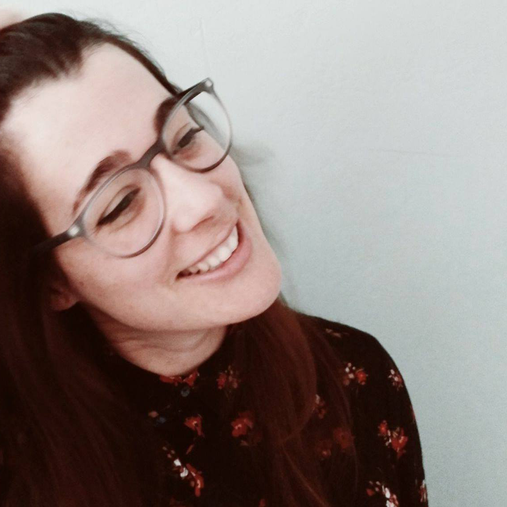

Estudié arquitectura en la ETSAM (Universidad Politécnica de Madrid), donde entregué el proyecto fin de carrera (que me había tutorizado J. Manuel López-Peláez) en 2013.
Durante mis estudios pasé mi año de erasmus (2008-2009) en Múnich (Alemania), donde cursé proyectos en la TUM (Technische Universität München), en la Unidad docente de Iluminación (de la profesora H. Deubzer).
La experiencia me encantó, me parecía que trabajar en un ambiente internacional, en otro idioma, me aportaba nuevas herramientas y sobretodo me abría la mente a otras formas de trabajar o entender la arquitectura.
Ya antes de entregar el fin de carrera nos juntamos unos cuantos compañeros y fundamos el colectivo de arquitectura y diseño “MP12”, donde hicimos pequeñas reformas, imágenes y concursos: entre ellos “La rehabilitación del complejo la panificadora” en Vigo, donde obtuvimos el 2º Premio, o la re-activación del espacio industrial “Space to culture” en Bolonia donde quedamos finalistas.
Pero yo tenía puesto el ojo en volver a Múnich, así que en 2014 me trasladé a vivir aquí donde he trabajado en diversos estudios: en Schürmann-Dettinger, J2m o Element-A Architekten (donde me desempeño actualmente). Realicé unos cuantos concursos entre ellos el del “complejo educativo y deportivo Freiham” en Múnich o la “Clínica para el tratamiento de enfermedades derivadas del estrés” en Gaflei (Liechtenstein) obteniendo en ambos el primer premio, pero pronto me pasé a los proyectos de ejecución y la organización y gestión de obra.
Entiendo la arquitectura como una unidad indivisible de integración en el entorno, funcionalidad, precisión constructiva, eficiencia energética y economía de medios, aunados bajo la manta de un concepto. Me interesa el proceso arquitectónico en el que la construcción, las instalaciones, la estructura, el paisajismo o la sostenibilidad nacen simultáneamente y de la mano de la composición espacial, configurándola en ocasiones.
Me apasiona la luz. Siento pasión por el detalle, ese que le da una vuelta de tuerca a todos estos condicionantes, los soluciona y además construye un espacio mágico. El que hace de la arquitectura un arte.
Considero la comunicación una herramienta fundamental para poder llevar a cabo todo este proceso con éxito, para poder coordinar a los miembros del equipo que participan y los agentes que intervienen. Comunicación sobretodo con el cliente y el usuario, pues creo que nunca debe olvidarse qué ni para quién se está construyendo.